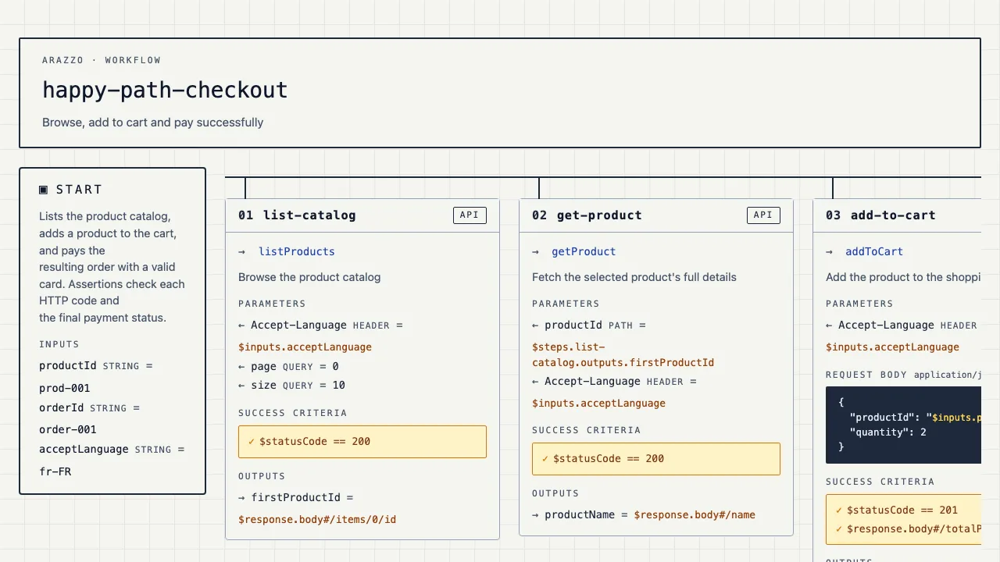

Arazzo workflows, linted, rendered, tested and load-tested.
One Go binary reads your Arazzo files and your OpenAPI contracts, then fails your CI, draws the workflow for your team, and runs it against any environment.
Why
Your workflow file should not be a dead document.
Typos ship
A step calls an operationId the contract renamed last sprint. Nobody notices until the integration breaks.
Nobody reads YAML
Product, QA and support never open the file, so the workflow lives in one person's head.
Tests drift
The Postman collection and the load test were written by hand and stopped matching the workflow months ago.
CI fails first
lint resolves every operationId against the contract and exits 1 on the first broken reference.
One page per workflow
view writes a page anyone can open offline, inputs to outputs, every expression visible.
Tests from the source
test regenerates Hurl and k6 from the workflow itself, so they cannot drift.
Commands
Four commands. Nothing else to install.
lint catches it before CI does
Official JSON Schema, semantic rules, then every step checked against the OpenAPI contract it calls.
$ arazzo-maestro lint checkout.arazzo.yaml [error] steps[create-order].operationId: operation "createOrder" not found in source "shop-api" Error: 1 issue(s) found
view draws it for everyone
Standalone HTML in light, dark or pb33f themes, portrait or landscape. Or Mermaid, rendered inline by GitHub.

test run e2e replays it for real
Each step becomes a Hurl request, outputs become captures, criteria become asserts. Point it at staging, a mock or production.
$ arazzo-maestro test run e2e shop.arazzo.yaml \ --base-url https://staging.example.com/api/v1 Success happy-path-checkout.hurl (4 requests) Success payment-refused-path.hurl (2 requests)
test gen perf puts it under load
The same chain of calls as a k6 script, with your virtual users, duration and thresholds.
$ arazzo-maestro test gen perf shop.arazzo.yaml \ --vus 50 --duration 5m --threshold 'http_req_duration=p(95)<500' $ k6 run -e BASE_URL=$STAGING dist/perf/k6/shop/happy-path-checkout.k6.js
Ship workflows you can prove.
Open source, Apache 2.0, signed releases with an SBOM.